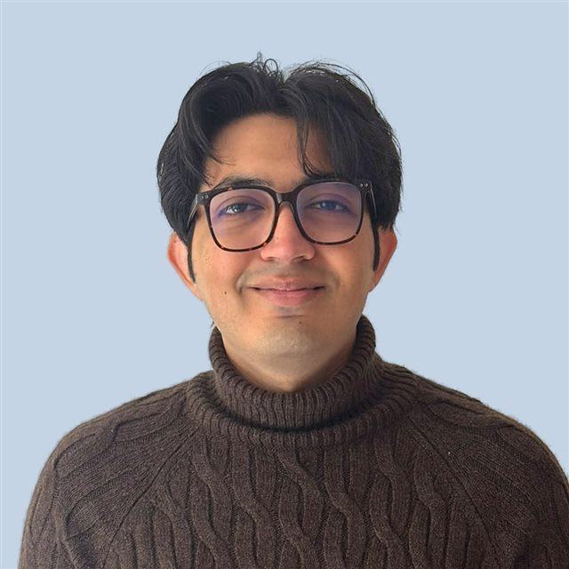
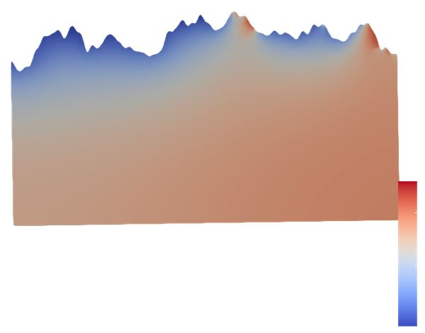
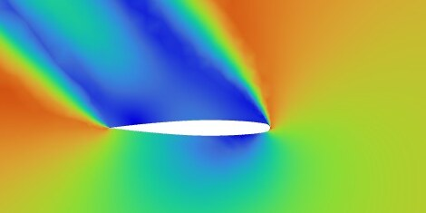

<title>Muhammad Ehab Bin Nauman</title>
<meta name="description" content="Computational engineer working on multiphase flows, CFD and numerical solvers.">
<link rel="preconnect" href="https://fonts.googleapis.com">
<link rel="preconnect" href="https://fonts.gstatic.com" crossorigin>
<link rel="stylesheet" href="https://fonts.googleapis.com/css2?family=Bricolage+Grotesque:opsz,wght@12..96,500;12..96,700&family=IBM+Plex+Mono:wght@400;500&family=IBM+Plex+Sans:ital,wght@0,400;0,500;0,600;1,400&display=swap">
<style>
  :root {
    --ground: #E9EFF6;
    --surface: #FFFFFF;
    --card: #F3F6FA;
    --ink: #0F1830;
    --muted: #58647C;
    --line: #D6DEE9;
    --accent: #2345D0;
    --accent-soft: #DCE4FB;
    --hot: #E0482E;
    --display: "Bricolage Grotesque", "Segoe UI", system-ui, sans-serif;
    --body: "IBM Plex Sans", "Segoe UI", system-ui, sans-serif;
    --mono: "IBM Plex Mono", ui-monospace, Consolas, monospace;
    --wrap: 1120px;
  }
  @media (prefers-color-scheme: dark) {
    :root:not([data-theme="light"]) {
      color-scheme: dark;
      --ground: #0B1222; --surface: #111A2E; --card: #17223A; --ink: #E7EDF7;
      --muted: #98A5BD; --line: #26324D; --accent: #86A0FF; --accent-soft: #1E2C55; --hot: #FF6B4F;
    }
  }
  :root[data-theme="dark"] {
    color-scheme: dark;
    --ground: #0B1222; --surface: #111A2E; --card: #17223A; --ink: #E7EDF7;
    --muted: #98A5BD; --line: #26324D; --accent: #86A0FF; --accent-soft: #1E2C55; --hot: #FF6B4F;
  }

  * { box-sizing: border-box; }
  html { scroll-behavior: smooth; scroll-padding-top: 72px; }
  @media (prefers-reduced-motion: reduce) { html { scroll-behavior: auto; } }
  body {
    margin: 0; background: var(--surface); color: var(--ink);
    font: 400 16.5px/1.65 var(--body);
    -webkit-font-smoothing: antialiased;
  }
  a { color: var(--accent); text-underline-offset: 3px; }
  :focus-visible { outline: 2px solid var(--accent); outline-offset: 3px; border-radius: 4px; }
  .wrap { max-width: var(--wrap); margin-inline: auto; padding-inline: 24px; }
  @media (max-width: 480px) { .wrap { padding-inline: 16px; } }

  h1, h2, h3 { font-family: var(--display); font-weight: 700; line-height: 1.08; text-wrap: balance; margin: 0; letter-spacing: -0.015em; }
  h2 { font-size: clamp(1.9rem, 3.6vw, 2.6rem); }
  h3 { font-size: 1.32rem; line-height: 1.2; }
  p { margin: 0; }
  .label {
    font: 500 0.74rem/1.4 var(--mono); letter-spacing: 0.08em; text-transform: uppercase; color: var(--muted);
  }

  /* nav */
  .nav {
    position: sticky; top: env(safe-area-inset-top, 0px); z-index: 10;
    background: color-mix(in srgb, var(--ground) 86%, transparent);
    backdrop-filter: blur(10px); -webkit-backdrop-filter: blur(10px);
    border-bottom: 1px solid var(--line);
  }
  .nav .wrap { display: flex; align-items: center; justify-content: space-between; gap: 16px; height: 58px; }
  .brand { font: 700 1.05rem var(--display); color: var(--ink); text-decoration: none; white-space: nowrap; }
  .brand span { color: var(--hot); }
  .nav ul { display: flex; gap: 22px; list-style: none; margin: 0; padding: 0; }
  .nav ul a { color: var(--muted); text-decoration: none; font-size: 0.93rem; font-weight: 500; }
  .nav ul a:hover { color: var(--ink); }
  @media (max-width: 720px) { .nav ul { display: none; } }

  /* hero */
  .hero { background: var(--ground); position: relative; }
  .hero-grid {
    display: grid; grid-template-columns: 1.35fr 0.65fr; gap: 48px; align-items: center;
    padding-block: 72px 36px;
  }
  .hero h1 { font-size: clamp(2.6rem, 6.6vw, 4.9rem); margin-block: 16px 22px; }
  .hero h1 .soft { color: var(--muted); font-weight: 500; }
  .lead { font-size: 1.18rem; max-width: 36ch; color: var(--ink); }
  .lead em { font-style: normal; color: var(--accent); font-weight: 500; }
  .actions { display: flex; flex-wrap: wrap; gap: 12px; margin-top: 30px; }
  .btn {
    display: inline-flex; align-items: center; gap: 8px; padding: 11px 20px; border-radius: 999px;
    font: 600 0.95rem var(--body); text-decoration: none; border: 1.5px solid var(--accent); cursor: pointer;
    transition: transform .15s ease, background-color .15s ease;
  }
  .btn.primary { background: var(--accent); color: var(--surface); }
  .btn.ghost { background: transparent; color: var(--accent); }
  .btn:hover { transform: translateY(-1px); }
  .btn.ghost:hover { background: var(--accent-soft); }
  .portrait { margin: 0; justify-self: end; width: min(100%, 300px); }
  .portrait img {
    display: block; width: 100%; height: auto; aspect-ratio: 1 / 1; object-fit: cover; object-position: 50% 35%; border-radius: 50%;
    border: 4px solid var(--surface); box-shadow: 0 0 0 1px var(--line);
  }
  .portrait figcaption { margin-top: 14px; text-align: center; }
  @media (max-width: 820px) {
    .hero-grid { grid-template-columns: 1fr; gap: 32px; padding-block: 44px 24px; }
    .portrait { justify-self: start; width: 180px; order: -1; }
  }
  .interface { position: relative; height: 150px; }
  .interface canvas { position: absolute; inset: 0; width: 100%; height: 100%; display: block; }
  .interface .readout { position: absolute; right: 24px; top: 14px; text-align: right; pointer-events: none; }
  @media (max-width: 480px) { .interface { height: 110px; } .interface .readout { right: 16px; } }

  /* sections */
  section.block { padding-block: 72px; }
  section.block + section.block { border-top: 1px solid var(--line); }
  .head { display: flex; flex-direction: column; gap: 10px; margin-bottom: 40px; }
  .head p { color: var(--muted); max-width: 60ch; }

  /* about */
  .about-grid { display: grid; grid-template-columns: 1.4fr 0.8fr; gap: 56px; }
  .about-text { display: flex; flex-direction: column; gap: 18px; max-width: 64ch; font-size: 1.05rem; }
  .facts { margin: 0; display: grid; gap: 20px; align-content: start; border-left: 1px solid var(--line); padding-left: 28px; }
  .facts div { display: grid; gap: 4px; }
  .facts dd { margin: 0; }
  @media (max-width: 820px) {
    .about-grid { grid-template-columns: 1fr; gap: 36px; }
    .facts { border-left: 0; padding-left: 0; border-top: 1px solid var(--line); padding-top: 28px; grid-template-columns: 1fr 1fr; }
  }
  @media (max-width: 480px) { .facts { grid-template-columns: 1fr; } }

  /* projects */
  .projects { display: grid; grid-template-columns: repeat(2, minmax(0, 1fr)); gap: 24px; }
  .project {
    background: var(--card); border: 1px solid var(--line); border-radius: 14px; overflow: hidden;
    display: flex; flex-direction: column;
  }
  .project .fig { background: var(--ground); border-bottom: 1px solid var(--line); aspect-ratio: 16 / 8; position: relative; }
  .project .fig svg, .project .fig video, .project .fig .fig-img { display: block; width: 100%; height: 100%; }
  .project .fig video { object-fit: cover; object-position: 50% 45%; }
  .project .fig .fig-img { object-fit: cover; }
  .project .fig .cap {
    position: absolute; left: 12px; bottom: 10px; font: 500 0.7rem var(--mono); color: var(--muted);
    background: color-mix(in srgb, var(--ground) 80%, transparent); padding: 2px 7px; border-radius: 4px;
  }
  .project .fig.sim { background: #FFFFFF; }
  .sim-poster, .sim-canvas {
    position: absolute; inset: 0; width: 100%; height: 100%; object-fit: contain; display: block;
  }
  .sim-poster[hidden] { display: none; }
  .sim-toggle {
    position: absolute; right: 12px; bottom: 10px; z-index: 1;
    font: 500 0.72rem var(--mono); color: #0F1830; background: rgba(255,255,255,0.9);
    border: 1px solid #D6DEE9; border-radius: 999px; padding: 4px 11px; cursor: pointer;
  }
  .sim-toggle:hover { border-color: #2345D0; }
  .project .fig.sim .cap { color: #58647C; background: rgba(255,255,255,0.9); }
  .project .body { padding: 24px 26px 26px; display: flex; flex-direction: column; gap: 14px; flex: 1; }
  .project .summary { color: var(--muted); }
  .project ul { margin: 0; padding-left: 1.1em; display: grid; gap: 6px; font-size: 0.96rem; }
  .project ul li::marker { color: var(--accent); }
  .tags { display: flex; flex-wrap: wrap; gap: 6px; margin-top: auto; padding-top: 6px; list-style: none; padding-left: 0 !important; }
  .tags li {
    font: 500 0.74rem var(--mono); color: var(--accent); background: var(--accent-soft);
    padding: 3px 9px; border-radius: 999px;
  }
  .tags li::marker { content: none; }

  .project.featured { grid-column: 1 / -1; display: grid; grid-template-columns: 1fr 1fr; }
  .project.featured .fig { aspect-ratio: auto; min-height: 100%; border-bottom: 0; border-right: 1px solid var(--line); }
  .project.featured h3 { font-size: 1.7rem; }
  .stats { display: grid; grid-template-columns: repeat(3, 1fr); gap: 14px; margin: 4px 0 2px; }
  .stats div { border-top: 2px solid var(--hot); padding-top: 8px; }
  .stats strong { display: block; font: 700 1.45rem/1.1 var(--display); font-variant-numeric: tabular-nums; }
  .stats span { font-size: 0.82rem; color: var(--muted); line-height: 1.35; display: block; margin-top: 4px; }
  @media (max-width: 900px) {
    .projects { grid-template-columns: 1fr; }
    .project.featured { grid-template-columns: 1fr; }
    .project.featured .fig { aspect-ratio: 600 / 470; min-height: 0; border-right: 0; border-bottom: 1px solid var(--line); }
  }
  @media (max-width: 480px) { .stats { grid-template-columns: 1fr; } .project .body { padding: 20px; } }

  /* timeline */
  .timeline { list-style: none; margin: 0; padding: 0; display: grid; gap: 0; }
  .timeline > li { display: grid; grid-template-columns: 150px 1fr; gap: 32px; padding-block: 26px; border-top: 1px solid var(--line); }
  .timeline > li:last-child { border-bottom: 1px solid var(--line); }
  .timeline .when { font: 500 0.88rem var(--mono); color: var(--muted); font-variant-numeric: tabular-nums; padding-top: 3px; }
  .timeline .kind { display: inline-block; margin-top: 6px; }
  .timeline h3 { font-size: 1.2rem; }
  .timeline .where { color: var(--muted); margin-top: 4px; }
  .timeline .detail { margin-top: 10px; }
  .timeline ul { margin: 10px 0 0; padding-left: 1.1em; display: grid; gap: 4px; }
  @media (max-width: 640px) { .timeline > li { grid-template-columns: 1fr; gap: 8px; } }

  /* skills */
  .skills { display: grid; grid-template-columns: repeat(4, minmax(0, 1fr)); gap: 32px; }
  .skills h3 { font-size: 1.05rem; margin-bottom: 12px; }
  .skills ul { list-style: none; margin: 0; padding: 0; display: grid; gap: 7px; }
  .skills li { padding-bottom: 7px; border-bottom: 1px dashed var(--line); font-size: 0.97rem; }
  .skills li small { font: 400 0.75rem var(--mono); color: var(--muted); margin-left: 6px; }
  @media (max-width: 900px) { .skills { grid-template-columns: repeat(2, minmax(0, 1fr)); } }
  @media (max-width: 480px) { .skills { grid-template-columns: 1fr; } }

  /* contact */
  .contact { background: var(--ground); }
  .contact-grid { display: grid; grid-template-columns: 1fr 1fr; gap: 48px; align-items: start; }
  .contact-list { list-style: none; margin: 0; padding: 0; display: grid; gap: 0; }
  .contact-list li {
    display: flex; align-items: center; justify-content: space-between; gap: 12px; flex-wrap: wrap;
    padding-block: 16px; border-bottom: 1px solid var(--line);
  }
  .contact-list li:first-child { border-top: 1px solid var(--line); }
  .contact-list .v { display: grid; gap: 2px; min-width: 0; }
  .contact-list .v a, .contact-list .v span { font-weight: 500; font-size: 1.05rem; overflow-wrap: anywhere; user-select: all; }
  .copy {
    font: 500 0.78rem var(--mono); color: var(--accent); background: transparent;
    border: 1px solid var(--line); border-radius: 999px; padding: 5px 12px; cursor: pointer;
  }
  .copy:hover { border-color: var(--accent); }
  @media (max-width: 820px) { .contact-grid { grid-template-columns: 1fr; gap: 32px; } }

  footer { background: var(--ground); border-top: 1px solid var(--line); }
  footer .wrap { padding-block: 24px; display: flex; justify-content: space-between; gap: 12px; flex-wrap: wrap; color: var(--muted); font-size: 0.88rem; }

  /* svg drawing tokens */
  .s-line { stroke: var(--ink); fill: none; }
  .s-muted { stroke: var(--muted); fill: none; }
  .s-accent { stroke: var(--accent); fill: none; }
  .s-hot { stroke: var(--hot); fill: none; }
  .f-accent { fill: var(--accent); }
  .f-soft { fill: var(--accent-soft); }
  .f-hot { fill: var(--hot); }
  .f-surface { fill: var(--surface); }
  .f-card { fill: var(--card); }
  .f-muted { fill: var(--muted); }
  .t-mono { font: 500 11px var(--mono); fill: var(--muted); }
</style>

<nav class="nav" aria-label="Main">
  <div class="wrap">
    <a class="brand" href="#top">Ehab Nauman<span>.</span></a>
    <ul>
      <li><a href="#about">About</a></li>
      <li><a href="#projects">Projects</a></li>
      <li><a href="#experience">Experience</a></li>
      <li><a href="#skills">Skills</a></li>
      <li><a href="#contact">Contact</a></li>
    </ul>
  </div>
</nav>

<header class="hero" id="top">
  <div class="wrap hero-grid">
    <div>
      <p class="label">Computational engineer · CFD · Multiphase flows</p>
      <h1>Muhammad Ehab Bin <span class="soft">Nauman</span></h1>
      <p class="lead">I build numerical models and solvers for flows where <em>gas, liquid and solid</em> meet.</p>
      <div class="actions">
        <a class="btn primary" href="#projects">See my projects</a>
        <a class="btn ghost" href="#contact">Get in touch</a>
      </div>
    </div>
    <figure class="portrait">
      
      <figcaption class="label">Saint-Étienne · Torino · Munich</figcaption>
    </figure>
  </div>
  <div class="interface" id="interface" aria-hidden="true">
    <canvas id="wave"></canvas>
    <div class="readout label">A live liquid surface<br>move your cursor to make waves</div>
  </div>
</header>

<main>
  <section class="block" id="about">
    <div class="wrap">
      <div class="head">
        <p class="label">About</p>
        <h2>Physics first, then code that runs it</h2>
      </div>
      <div class="about-grid">
        <div class="about-text">
          <p>I'm a computational engineer. Most of my work is on multiphase flow: I build numerical models of fluid systems and write the solvers that run them in Python and Julia. I also run industrial CFD in ANSYS Fluent and OpenFOAM.</p>
          <p>I studied aerospace engineering at the Institute of Space Technology in Islamabad and graduated in the top 10% of my class. I then spent a year as a design engineer at NaqCoDE Technologies, running aerodynamic CFD on aerospace configurations.</p>
          <p>In 2026 I graduated from the Erasmus Mundus joint master's in Multiphase Systems for Sustainable Engineering, which I studied at Mines Saint-Étienne, Politecnico di Torino and TUM. My master's thesis at TUM modelled how water moves beneath the rough, shadowed surface of the Moon.</p>
          <p>The problems I like best have messy physics and need a model that is both honest and fast: non-spherical plastic pellets in a conveying pipe, the shock front of a dam break, water migrating through cold lunar soil.</p>
        </div>
        <dl class="facts">
          <div><dt class="label">Based in</dt><dd>Saint-Étienne, France</dd></div>
          <div><dt class="label">Graduated</dt><dd>MSc Multiphase Systems for Sustainable Engineering, 2026</dd></div>
          <div><dt class="label">Languages</dt><dd>Urdu (native), English (C1)</dd></div>
          <div><dt class="label">Away from the desk</dt><dd>Swimming, reading, video games, billiards</dd></div>
        </dl>
      </div>
    </div>
  </section>

  <section class="block" id="projects">
    <div class="wrap">
      <div class="head">
        <p class="label">Projects</p>
        <h2>Selected work</h2>
        <p>Research, thesis and course projects from my master's and bachelor's degrees, from solvers written from scratch to industrial CFD studies.</p>
      </div>

      <div class="projects">
        <!-- Thesis -->
        <article class="project featured">
          <div class="fig sim" id="thesis-sim">
            
            <canvas class="sim-canvas" width="600" height="470" aria-hidden="true"></canvas>
            <button class="sim-toggle" type="button" id="thesis-sim-toggle" aria-label="Pause animation">Pause</button>
            <span class="cap">thesis simulation · one lunation · ParaView</span>
          </div>
          <div class="body">
            <p class="label">Master's thesis · TUM Lunar &amp; Planetary Exploration · Apr–Sep 2026</p>
            <h3>Micro-shadows and water migration beneath the lunar surface</h3>
            <p class="summary">Existing models resolve either surface roughness and shadowing, or water transport in a 1-D subsurface column. None did both at the micrometre-to-centimetre scale. I wrote a 2-D finite-volume model in Julia that couples the two.</p>
            <ul>
              <li>Rough lunar surfaces from spectral Fourier synthesis, tuned by RMS height</li>
              <li>Unstructured meshing and a 2-D ray tracer that marks each facet lit or shadowed across solar elevations</li>
              <li>Coupled heat and mass transfer over several lunations, with Langmuir sorption and Knudsen diffusion</li>
            </ul>
            <div class="stats">
              <div><strong>16°–43°</strong><span>range of RMS surface slopes modelled</span></div>
              <div><strong>&gt;200 K</strong><span>temperature contrast across about 1 cm</span></div>
              <div><strong>1.5 cm</strong><span>depth of stored water at 43°, vs a sub-mm skin when flat</span></div>
            </div>
            <ul class="tags"><li>Julia</li><li>Finite volume</li><li>Ray tracing</li><li>Heat &amp; mass transfer</li></ul>
          </div>
        </article>

        <!-- Pneumatic -->
        <article class="project">
          <div class="fig">
            <svg viewBox="0 0 480 240" preserveAspectRatio="xMidYMid slice" role="img" aria-label="Diagram: non-spherical particles carried by gas through a horizontal pipe">
              <rect class="f-card" x="0" y="0" width="480" height="240"/>
              <rect class="f-surface" x="0" y="70" width="480" height="100"/>
              <line class="s-line" stroke-width="2" x1="0" y1="70" x2="480" y2="70"/>
              <line class="s-line" stroke-width="2" x1="0" y1="170" x2="480" y2="170"/>
              <g class="s-accent" stroke-width="1.4" opacity="0.55">
                <path d="M10 96 H470"/><path d="M10 120 H470"/><path d="M10 144 H470"/>
              </g>
              <path class="f-accent" d="M470 96 l-8 -4 v8 z M470 120 l-8 -4 v8 z M470 144 l-8 -4 v8 z" opacity="0.55"/>
              <g class="f-hot">
                <ellipse cx="60" cy="150" rx="10" ry="4.5" transform="rotate(20 60 150)"/>
                <ellipse cx="110" cy="130" rx="7" ry="4" transform="rotate(-30 110 130)"/>
                <rect x="150" y="146" width="16" height="7" rx="2" transform="rotate(12 158 150)"/>
                <ellipse cx="200" cy="110" rx="9" ry="3.5" transform="rotate(50 200 110)"/>
                <ellipse cx="236" cy="156" rx="11" ry="4" transform="rotate(-8 236 156)"/>
                <rect x="280" y="124" width="14" height="6" rx="2" transform="rotate(-40 287 127)"/>
                <ellipse cx="330" cy="152" rx="8" ry="5" transform="rotate(30 330 152)"/>
                <ellipse cx="370" cy="100" rx="10" ry="3.5" transform="rotate(-15 370 100)"/>
                <rect x="404" y="146" width="15" height="6" rx="2" transform="rotate(25 411 149)"/>
                <ellipse cx="440" cy="126" rx="7" ry="4.5" transform="rotate(60 440 126)"/>
              </g>
              <text class="t-mono" x="16" y="50">gas + non-spherical pellets → Δp</text>
              <text class="t-mono" x="16" y="206">0-D two-fluid model</text>
            </svg>
          </div>
          <div class="body">
            <p class="label">Research project · Mines Saint-Étienne &amp; IFP Energies nouvelles · 2024–2026 · team of 4</p>
            <h3>Pneumatic transport of plastic waste and biomass</h3>
            <p class="summary">Biomass and plastic pellets are non-spherical, which changes how they move through a conveying pipe on the way to a pyrolysis reactor. We built a 0-D two-fluid model that quickly estimates pressure loss and solid volume fraction.</p>
            <ul>
              <li>Solved the nonlinear system with fsolve, bisection and Newton–Raphson, and compared their speed and stability</li>
              <li>Added Ishii–Zuber, Ergun and Buyevich drag models plus two non-spherical closures</li>
              <li>Added a hydrostatic term that removed a systematic under-prediction against experimental data</li>
            </ul>
            <ul class="tags"><li>Python</li><li>Two-fluid model</li><li>Drag closures</li><li>Root finding</li></ul>
          </div>
        </article>

        <!-- Dam break -->
        <article class="project">
          <div class="fig">
            <svg viewBox="0 0 480 240" preserveAspectRatio="xMidYMid slice" role="img" aria-label="Diagram: dam-break water depth profile, initial step and later rarefaction and shock">
              <rect class="f-card" x="0" y="0" width="480" height="240"/>
              <path class="f-soft" d="M0 70 H150 C190 70 210 118 250 132 L330 136 L330 176 L480 176 L480 200 L0 200 Z"/>
              <path class="s-accent" stroke-width="2.4" d="M0 70 H150 C190 70 210 118 250 132 L330 136 L330 176 L480 176"/>
              <path class="s-muted" stroke-width="1.4" stroke-dasharray="5 5" d="M0 70 H240 V176 H480"/>
              <line class="s-line" stroke-width="2" x1="0" y1="200" x2="480" y2="200"/>
              <line class="s-hot" stroke-width="1.4" x1="330" y1="120" x2="330" y2="192"/>
              <text class="t-mono" x="16" y="50">h(x, t) · t = 0 dashed</text>
              <text class="t-mono" x="160" y="104">rarefaction</text>
              <text class="t-mono" x="340" y="126">shock</text>
              <text class="t-mono" x="16" y="224">MUSCL–HLLC · TVD RK2</text>
            </svg>
          </div>
          <div class="body">
            <p class="label">Course project · TUM Computational Thermo-Fluid Dynamics · Feb 2026</p>
            <h3>2-D dam-break solver for the shallow water equations</h3>
            <p class="summary">A finite-volume solver written from scratch in Python for dam-break flows, where shocks and moving free surfaces break most simple schemes.</p>
            <ul>
              <li>MUSCL reconstruction with slope limiting and an HLLC approximate Riemann solver</li>
              <li>Second-order TVD Runge–Kutta time stepping on rectangular and radial dam breaks</li>
              <li>Second-order convergence confirmed by manufactured solutions; validated against the Stoker solution and Clawpack</li>
            </ul>
            <ul class="tags"><li>Python</li><li>FVM</li><li>HLLC</li><li>Verification &amp; validation</li></ul>
          </div>
        </article>

        <!-- Sloshing -->
        <article class="project">
          <div class="fig">
            <video src="sloshing.mp4" poster="sloshing-poster.png" autoplay muted loop playsinline aria-label="ANSYS Fluent animation of liquid sloshing in a tank"></video>
            <span class="cap">volume fraction · ANSYS Fluent</span>
          </div>
          <div class="body">
            <p class="label">Course project · TUM Multiphase Flows · Feb 2026 · team project</p>
            <h3>Sloshing in a partially filled storage tank</h3>
            <p class="summary">A transient ANSYS Fluent study of liquid–gas sloshing in a tank shaken at 0.89 Hz, motivated by hydrogen storage in vehicles and cryogenic tanks.</p>
            <ul>
              <li>VOF with k–ω SST turbulence and the energy equation, PISO pressure–velocity coupling</li>
              <li>Mesh independence over four meshes: 1.8% difference between the medium and fine grids</li>
              <li>Tracked the free surface, wall pressure, forces and heat flux through the walls</li>
            </ul>
            <ul class="tags"><li>ANSYS Fluent</li><li>VOF</li><li>k–ω SST</li><li>Mesh study</li></ul>
          </div>
        </article>

        <!-- Onera M6 -->
        <article class="project">
          <div class="fig">
            
            <span class="cap">velocity · root chord · α = 55°</span>
          </div>
          <div class="body">
            <p class="label">Course project · Mines Saint-Étienne · 2025 · team of 3</p>
            <h3>Stall angle of the Onera M6 wing</h3>
            <p class="summary">An ANSYS Fluent study of the Onera M6 swept wing from −3° to 55° angle of attack, mapping its lift and drag curves to find where it stalls.</p>
            <ul>
              <li>Hemispherical far-field built in SpaceClaim, with a body of influence and 15 inflation layers around the wing</li>
              <li>Grid convergence on C<sub>l</sub> at 3.06° picked a 2.1-million-element mesh; Spalart–Allmaras turbulence at Mach 0.84</li>
              <li>Stall found at about 35°; at 3.06°, C<sub>l</sub> = 0.257 against NASA's 0.27</li>
            </ul>
            <ul class="tags"><li>ANSYS Fluent</li><li>Spalart–Allmaras</li><li>Grid convergence</li><li>External aerodynamics</li></ul>
          </div>
        </article>

        <!-- FSI -->
        <article class="project">
          <div class="fig">
            <svg viewBox="0 0 480 240" preserveAspectRatio="xMidYMid slice" role="img" aria-label="Diagram: airflow streamlines around a pointed antenna radome">
              <rect class="f-card" x="0" y="0" width="480" height="240"/>
              <g class="s-accent" stroke-width="1.4" opacity="0.6">
                <path d="M0 40 H200 C260 40 300 46 480 50"/>
                <path d="M0 72 H180 C240 72 290 70 480 78"/>
                <path d="M0 104 H170 C230 96 300 90 480 100"/>
                <path d="M0 150 H170 C230 158 300 164 480 154"/>
                <path d="M0 182 H180 C240 182 290 184 480 176"/>
                <path d="M0 214 H200 C260 214 300 208 480 204"/>
              </g>
              <path class="f-surface" d="M200 127 C240 100 300 96 360 98 L460 98 L460 156 L360 156 C300 158 240 154 200 127 Z"/>
              <path class="s-line" stroke-width="2" d="M200 127 C240 100 300 96 360 98 L460 98 L460 156 L360 156 C300 158 240 154 200 127 Z"/>
              <path class="s-hot" stroke-width="2" d="M232 112 C254 104 270 102 290 101"/>
              <text class="t-mono" x="16" y="232">flow ↔ structure · two-way coupled</text>
              <text class="t-mono" x="238" y="90">peak stress</text>
            </svg>
          </div>
          <div class="body">
            <p class="label">Bachelor's thesis · Institute of Space Technology · 2022–2023</p>
            <h3>Fluid–structure interaction on antenna radomes</h3>
            <p class="summary">A coupled flow and structural simulation of antenna radomes, used to study how and where they fail under aerodynamic load.</p>
            <ul>
              <li>Coupled CFD and structural response in one simulation workflow</li>
              <li>Validated the computed results against a mechanical failure analysis</li>
              <li>First hands-on work in multiphysics coupling and simulation design</li>
            </ul>
            <ul class="tags"><li>FSI</li><li>ANSYS Workbench</li><li>Failure analysis</li></ul>
          </div>
        </article>
      </div>
    </div>
  </section>

  <section class="block" id="experience">
    <div class="wrap">
      <div class="head">
        <p class="label">Experience &amp; education</p>
        <h2>Where I've worked and studied</h2>
      </div>
      <ol class="timeline">
        <li>
          <div class="when">2024 – 2026<br><span class="kind label">Education</span></div>
          <div>
            <h3>Erasmus Mundus MSc, Multiphase Systems for Sustainable Engineering</h3>
            <p class="where">Mines Saint-Étienne (France) · Politecnico di Torino (Italy) · TUM (Germany)</p>
            <p class="detail">A joint master's on solving fluid mechanics problems with numerical methods, with a focus on multiphase flow. Graduated in 2026 with three degrees:</p>
            <ul>
              <li>Diplôme National de Master, Chemical and Biochemical Engineering (Mines Saint-Étienne)</li>
              <li>Laurea Magistrale, Chemical and Sustainable Processes Engineering (Politecnico di Torino)</li>
              <li>MSc Materials Science and Engineering (TUM)</li>
            </ul>
          </div>
        </li>
        <li>
          <div class="when">2023 – 2024<br><span class="kind label">Work</span></div>
          <div>
            <h3>Design Engineer, NaqCoDE Technologies</h3>
            <p class="where">Islamabad, Pakistan</p>
            <ul>
              <li>Ran CFD simulations of aerospace configurations with physics-based models and numerical methods</li>
              <li>Predicted aerodynamic coefficients numerically</li>
              <li>Carried out transient simulations and mesh studies in ANSYS Fluent and OpenFOAM</li>
            </ul>
          </div>
        </li>
        <li>
          <div class="when">2019 – 2023<br><span class="kind label">Education</span></div>
          <div>
            <h3>BS Aerospace Engineering, Institute of Space Technology</h3>
            <p class="where">Islamabad, Pakistan · GPA 3.45 / 4.00, top 10% of class</p>
            <p class="detail">Thesis: fluid–structure interaction on antenna radomes and their failure modes.</p>
          </div>
        </li>
      </ol>
    </div>
  </section>

  <section class="block" id="skills">
    <div class="wrap">
      <div class="head">
        <p class="label">Skills</p>
        <h2>Tools and methods</h2>
      </div>
      <div class="skills">
        <div>
          <h3>Numerical methods</h3>
          <ul>
            <li>Finite volume method</li>
            <li>Riemann solvers, MUSCL, TVD schemes</li>
            <li>Ray tracing</li>
            <li>Mesh generation</li>
            <li>Verification with manufactured solutions</li>
          </ul>
        </div>
        <div>
          <h3>Physics</h3>
          <ul>
            <li>Multiphase flow</li>
            <li>VOF and two-fluid models</li>
            <li>Coupled heat and mass transfer</li>
            <li>Turbulence modelling</li>
            <li>Fluid–structure interaction</li>
          </ul>
        </div>
        <div>
          <h3>Programming</h3>
          <ul>
            <li>Python</li>
            <li>Julia</li>
            <li>MATLAB</li>
          </ul>
        </div>
        <div>
          <h3>Simulation software</h3>
          <ul>
            <li>ANSYS Fluent</li>
            <li>ANSYS Workbench</li>
            <li>OpenFOAM <small>basic</small></li>
            <li>SU2 <small>basic</small></li>
          </ul>
        </div>
      </div>
    </div>
  </section>

  <section class="block contact" id="contact">
    <div class="wrap contact-grid">
      <div class="head">
        <p class="label">Contact</p>
        <h2>Let's talk about flows</h2>
        <p>I'm happy to hear about research, simulation and engineering work, or to talk through any of the projects above.</p>
      </div>
      <ul class="contact-list">
        <li>
          <div class="v"><span class="label">Email</span><a href="mailto:mohammadehab2810@gmail.com" id="email">mohammadehab2810@gmail.com</a></div>
          <button class="copy" type="button" data-copy="mohammadehab2810@gmail.com" id="copy-email">Copy</button>
        </li>
        <li>
          <div class="v"><span class="label">Phone</span><span id="phone">+33 7 73 86 27 46</span></div>
          <button class="copy" type="button" data-copy="+33773862746" id="copy-phone">Copy</button>
        </li>
        <li>
          <div class="v"><span class="label">LinkedIn</span><a href="https://www.linkedin.com/in/muhammad-ehab-bin-nauman-a13045205/" target="_blank" rel="noopener">Muhammad Ehab Bin Nauman</a></div>
        </li>
        <li>
          <div class="v"><span class="label">GitHub</span><a href="https://github.com/mehab28" target="_blank" rel="noopener">github.com/mehab28</a></div>
        </li>
      </ul>
    </div>
  </section>
</main>

<footer>
  <div class="wrap">
    <span>© 2026 Muhammad Ehab Bin Nauman</span>
    <a href="#top">Back to top</a>
  </div>
</footer>

<script>
  // Copy buttons
  document.querySelectorAll('.copy').forEach(function (btn) {
    btn.addEventListener('click', function () {
      var text = btn.getAttribute('data-copy');
      var done = function () { btn.textContent = 'Copied'; setTimeout(function () { btn.textContent = 'Copy'; }, 1600); };
      var fallback = function () {
        var el = btn.parentElement.querySelector('.v a, .v span:not(.label)');
        var r = document.createRange(); r.selectNodeContents(el);
        var s = window.getSelection(); s.removeAllRanges(); s.addRange(r);
        btn.textContent = 'Selected';
        setTimeout(function () { btn.textContent = 'Copy'; }, 1600);
      };
      try { navigator.clipboard.writeText(text).then(done, fallback); } catch (e) { fallback(); }
    });
  });

  // Free-surface interface: 1-D wave equation, explicit finite differences
  (function () {
    var box = document.getElementById('interface');
    var cv = document.getElementById('wave');
    var ctx = cv.getContext('2d');
    var reduce = window.matchMedia('(prefers-reduced-motion: reduce)');
    var N = 160, C2 = 0.25, damp = 0.9975;
    var prev = new Float32Array(N), cur = new Float32Array(N), next = new Float32Array(N);
    var colors = {}, W = 0, H = 0, t = 0, running = true;

    function readColors() {
      var cs = getComputedStyle(document.documentElement);
      colors.liquid = cs.getPropertyValue('--surface').trim();
      colors.line = cs.getPropertyValue('--hot').trim();
      colors.tint = cs.getPropertyValue('--accent-soft').trim();
    }
    function resize() {
      var dpr = Math.min(window.devicePixelRatio || 1, 2);
      W = box.clientWidth; H = box.clientHeight;
      cv.width = W * dpr; cv.height = H * dpr;
      ctx.setTransform(dpr, 0, 0, dpr, 0, 0);
      draw();
    }
    // initial shape: a gentle sloshing mode so the resting frame is not flat
    for (var i = 0; i < N; i++) {
      var x = i / (N - 1);
      cur[i] = prev[i] = 0.35 * Math.cos(Math.PI * x) + 0.12 * Math.cos(3 * Math.PI * x);
    }
    function poke(xFrac, amp, width) {
      var c = xFrac * (N - 1);
      for (var i = 0; i < N; i++) {
        var d = (i - c) / width;
        cur[i] += amp * Math.exp(-d * d);
      }
    }
    function step() {
      for (var i = 1; i < N - 1; i++) {
        next[i] = (2 * cur[i] - prev[i] + C2 * (cur[i + 1] - 2 * cur[i] + cur[i - 1])) * damp;
      }
      next[0] = next[1]; next[N - 1] = next[N - 2]; // reflecting walls
      var tmp = prev; prev = cur; cur = next; next = tmp;
    }
    function draw() {
      if (!W) return;
      var mid = H * 0.52, amp = H * 0.34;
      ctx.clearRect(0, 0, W, H);
      ctx.beginPath();
      ctx.moveTo(0, H);
      for (var i = 0; i < N; i++) {
        var y = mid - Math.max(-1.3, Math.min(1.3, cur[i])) * amp;
        ctx.lineTo(i / (N - 1) * W, y);
      }
      ctx.lineTo(W, H); ctx.closePath();
      ctx.fillStyle = colors.liquid; ctx.fill();
      // interface line
      ctx.beginPath();
      for (var j = 0; j < N; j++) {
        var yy = mid - Math.max(-1.3, Math.min(1.3, cur[j])) * amp;
        if (j === 0) ctx.moveTo(0, yy); else ctx.lineTo(j / (N - 1) * W, yy);
      }
      ctx.strokeStyle = colors.line; ctx.lineWidth = 2; ctx.stroke();
    }
    function frame() {
      if (running) {
        t += 1 / 60;
        // tank excitation near the walls, echoing the 0.89 Hz sloshing case
        var f = 0.004 * Math.sin(2 * Math.PI * 0.89 * t * 0.5);
        cur[0] += f; cur[N - 1] -= f;
        for (var k = 0; k < 3; k++) step();
        draw();
      }
      requestAnimationFrame(frame);
    }

    var hero = document.querySelector('.hero');
    var lastX = null;
    hero.addEventListener('pointermove', function (e) {
      if (reduce.matches) return;
      var r = box.getBoundingClientRect();
      var xf = (e.clientX - r.left) / r.width;
      if (lastX !== null) {
        var speed = Math.min(Math.abs(xf - lastX) * 40, 1);
        poke(xf, 0.05 * speed, 5);
      }
      lastX = xf;
    });
    hero.addEventListener('pointerleave', function () { lastX = null; });

    readColors(); resize();
    window.addEventListener('resize', resize);
    window.matchMedia('(prefers-color-scheme: dark)').addEventListener('change', function () { readColors(); draw(); });
    new MutationObserver(function () { readColors(); draw(); })
      .observe(document.documentElement, { attributes: true, attributeFilter: ['data-theme'] });

    // pause when hero is off-screen
    if ('IntersectionObserver' in window) {
      new IntersectionObserver(function (es) { running = es[0].isIntersecting && !reduce.matches; })
        .observe(box);
    }
    if (reduce.matches) { running = false; }
    reduce.addEventListener('change', function () { running = !reduce.matches; });
    requestAnimationFrame(frame);

    // Thesis simulation: 200 ParaView frames packed into 10 sprite sheets (5 x 4 frames each)
    (function () {
      var box = document.getElementById('thesis-sim');
      if (!box) return;
      var cv = box.querySelector('.sim-canvas'), c = cv.getContext('2d');
      var poster = box.querySelector('.sim-poster');
      var btn = document.getElementById('thesis-sim-toggle');
      var FW = 600, FH = 470, COLS = 5, PER = 20, SHEETS = 10, TOTAL = 200, FPS = 20;
      var sheets = [], loaded = 0, frame = 100, playing = !reduce.matches, visible = true, last = 0;
      function setBtn() {
        btn.textContent = playing ? 'Pause' : 'Play';
        btn.setAttribute('aria-label', playing ? 'Pause animation' : 'Play animation');
      }
      function drawFrame(n) {
        var s = sheets[Math.floor(n / PER)], k = n % PER;
        if (!s || !s.complete) return false;
        c.fillStyle = '#FFFFFF'; c.fillRect(0, 0, FW, FH);
        c.drawImage(s, (k % COLS) * FW, Math.floor(k / COLS) * FH, FW, FH, 0, 0, FW, FH);
        return true;
      }
      function tick(ts) {
        if (playing && visible && loaded === SHEETS && ts - last >= 1000 / FPS) {
          last = ts;
          frame = (frame + 1) % TOTAL;
          if (drawFrame(frame)) poster.hidden = true;
        }
        requestAnimationFrame(tick);
      }
      for (var i = 0; i < SHEETS; i++) {
        var im = new Image();
        im.onload = function () { loaded++; };
        im.src = 'sheet' + (i < 10 ? '0' : '') + i + '.jpg';
        sheets.push(im);
      }
      btn.addEventListener('click', function () { playing = !playing; setBtn(); });
      if ('IntersectionObserver' in window) {
        new IntersectionObserver(function (es) { visible = es[0].isIntersecting; }).observe(box);
      }
      setBtn();
      requestAnimationFrame(tick);
    })();

    // respect reduced motion for the sloshing video too
    var vid = document.querySelector('.project video');
    if (vid && reduce.matches) { vid.removeAttribute('autoplay'); vid.pause(); vid.controls = true; }
  })();
</script>
